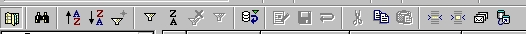

How to do a "Mail Merge" from a Calc spreadsheet.
provided by
the OpenOffice.org Documentation Project
Table of Contents
- Creation of the Database Source
- Creation of the Mail Template
- Merging
- Tricks about the Mail Pagination
- Credits
1. Creation of the Database Source
To do a Mail Merge in OpenOffice.org, you have to transform your spreadsheet into a database source, so that you'll be able to display it inside the Beamer.
When you have completed your spreadsheet with the needed data, click on File-Save to save it, in the .sxc format, in the directory you wish. Now, you can close your sheet.
In the Tools menu, select Data sources...
To the left, you can see the data sources already created and registered from the Data Sources Manager. You only have to browse up to the position, where you saved yours, and select it.
-
Click on 'New Data Source'.
-
To the right, you can type a name for it.
-
Under Connection, choose the Type of the document that you will use as the Data Source. Here, in the drop-down list, choose 'Spreadsheet'.
-
In the Tables tab, verify that your spreadsheet name has been selected.
- Then, click on 'OK' and your sheet will be usable for a Mail Merge.
Hint: This method can be used to register into OpenOffice.org Suite whatever supported data source type you already have present on your system.
2. Creation of the Mail Template
-
Open a new text document : File – New – Text
-
Type the content of your letter. You don't need to insert the address fields in this moment. You can type an asterisk (*), as a place-holder, to orient yourself when you have completed your letter.
-
Once you have completed the letter; save it, but don't close the file.
-
From the 'View' menu, select 'Data Sources' (or hit the F4 key.)
Your registered data sources will be displayed in the Beamer and you only have
to select the source with which you wish to work:
-
Click on the little cross, next to your data source name, to display its content tree. Then, by clicking on the name of a table, you will see displayed the fields and their records in the right side of the Beamer.
-
Now, you have to add the fields into your document.
-
Click and hold on the field, Name (or whatever your field is named), of your table.
-
Holding the mouse button down, drag it up to the asterisk placeholder in your document and release it. The field will be displayed in your document area:
-
Repeat this action for the field Surname. Change the line position to insert the other address fields.
When you have inserted all your fields, you're ready for the merging.
3. Merging
-
Select the records you need:
-
If you wish to select all records, click on the rectangle at the upper left corner of the table.
Alternately, if you wish to select all the content of a field, you can click on the heading of the field.
Finally, if you wish to select all fields of a record, click on the gray rectangle displayed to its right. A small arrow will be displayed and the record will be highlighted.
To select records that are not consecutive, hold the CTRL key down while making your selections.
Now, you can do your merging.
On the Toolbar of the Beamer, the icon before the last displays some letters. Click on it to access the sorting tools:

You'll access the window below:
-
Sort the records, as you have selected them, in the previous procedure.
-
Then choose the device to which output is to be directed.
If you choose ‘File’, as in our example, you have to select the file path by clicking on the button with 3 points to the right of the 'Path' text box, so you can browse your file system up to the file you wish to use.
There will be a file created for use with the records selected. You can name this file according to whichever field name of your data source.
Now the operation is terminated and the merging completed!
4. Tricks about the Mail Pagination
You may find It difficult, using this method, that your mail template be perfectly displayed. Are all names correctly contained in the lines you wish? Is there some space lacking in a field? How can you avoid blank lines, when some addresses only require one line while others require two lines? These are only a few of the questions that we'll answer below.
How can you control the pagination of your mail template?
You can display the records in your document before merging them.
To do so, look at the Toolbar of the Beamer :
The third icon from the right is called ‘Data to Fields’.
Select a record and click on the icon, the fields of your mail template will be filled with the selected record data.
You can repeat the action as many times as you need to control the pagination and to adjust your mail template so that all addresses are correctly displayed.
You don't need to select the records again after you have done your checks.
How to eliminate the blank address lines?
Let's say that in our template, the field ‘ADDRESS_2’ doesn't contain data in every record.
Place the cursor before the field ‘ADDRESS_2’ in your mail template. Press the key combination CTRL+F2 to open the fields dialog window.
Switch to the ‘Functions’ tab .
Select the field style ‘Hidden Paragraph’ and insert as Condition ‘not(field name)'. In our example it will be not(ADDRESS_2). Then click on the 'Insert' button to insert your function into the document.
Thanks : Richard Holt, great proof reader and OOo contributor
Intgr by : Gianluca Turconi
Last modified : February 16, 2002
Contacts : OpenOffice.org Documentation Project http://documentation.openoffice.org/index.html
Translation : Gianluca Turconi